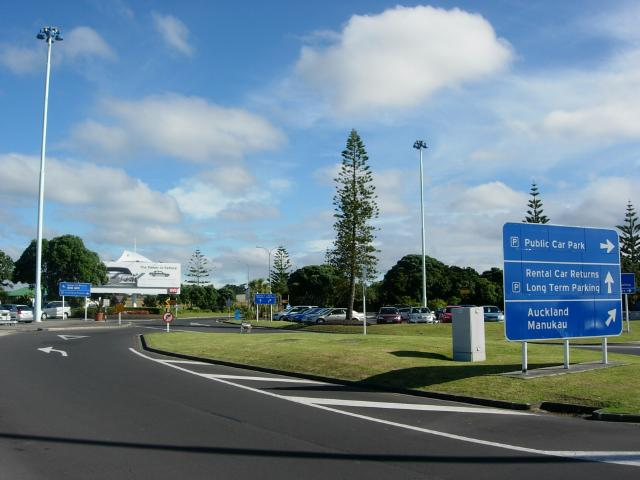
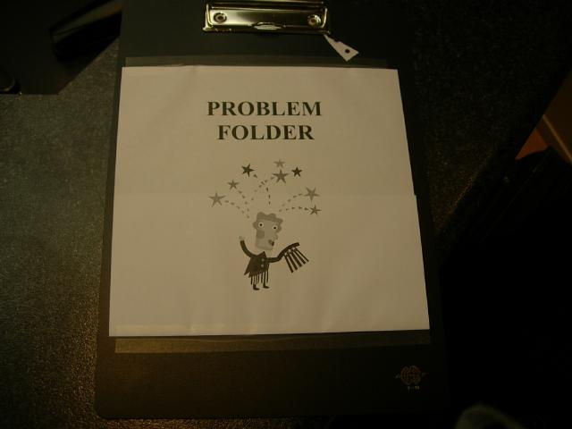
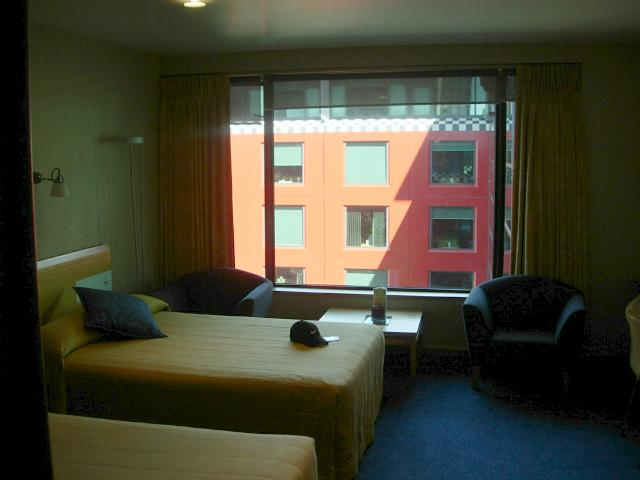
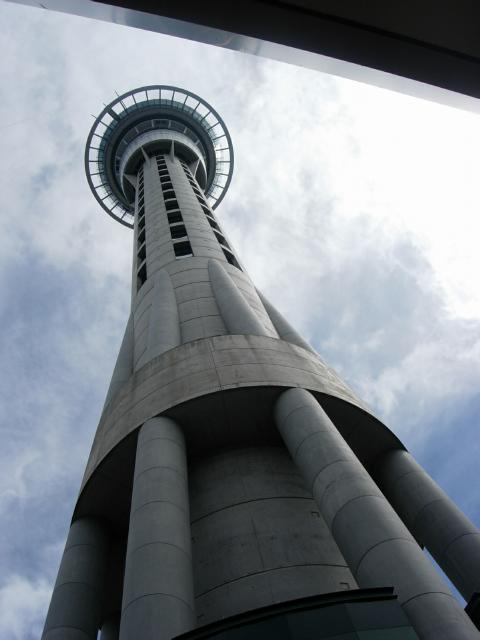
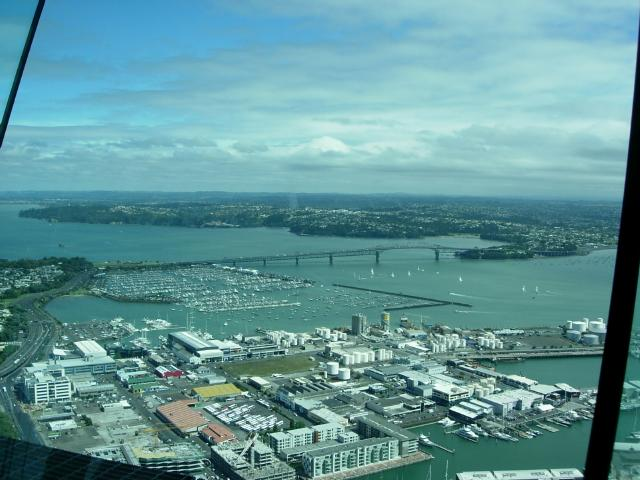
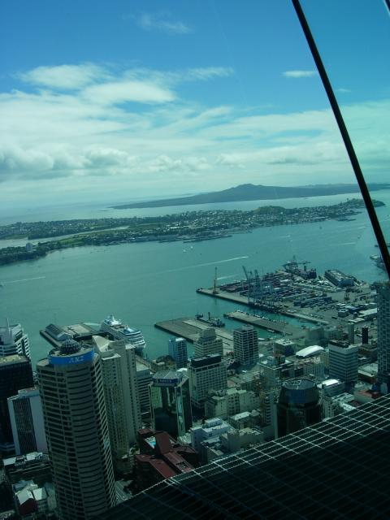
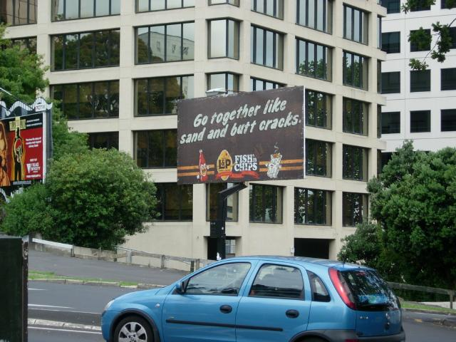
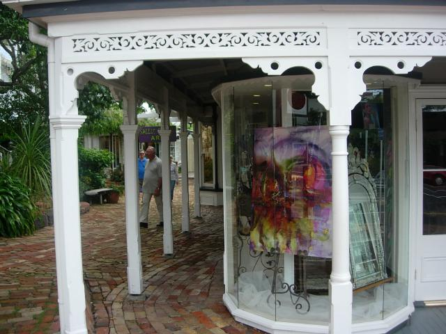
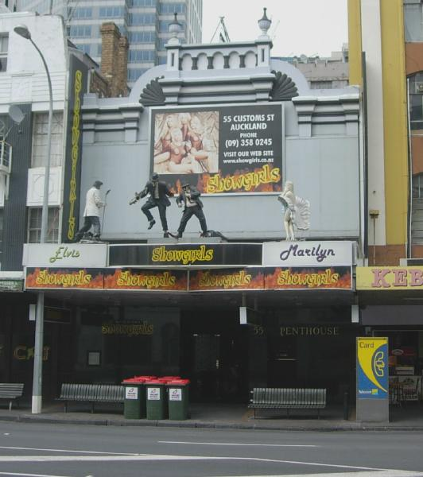

Auckland
No Fear Seat 1A. A first. The redeye from LAX hit moderate chop at all altitudes. Sleeping meant bouncing on the bed all night at 2Hz, as if someone put too many quarters in the slot (if you don't remember when motel beds had massage machines, you probably never rode in a Studebaker). Next morning, half the coffee heaved itself over the great divide and into the saucer. I've totally lost my fear of flying. No more panic attacks during turbulence now that my serotonin levels are up to normal.

Auckland International. First impression: Sydney meets Kaneohe
Middle Myst Everyone who's been to New Zealand falls in love with it. From the glowing reports and LOTR, I expected some magic. The approach didn't disappoint. We rounded conical hills crusted with alien trees, opening up a Japanese tissue-paper world with jagged bands of silver, cloud brown, dull opal, white and gray only hinting at estuaries and hills. It was like approach Japan as rendered by the artists of Myst.

Spotted at the Budget rental counter
Asked the agent if Americans had an attitude problem or just drove on the right. She said it was just random clipart. Rented a Ford Mondeo that I named Marvin because of the way it reacts to the gas pedal (Faster? You're out of your mind. You'll be the death of both of us. Oh very well, I guess I can go faster. Let's get it over with. Big breath now...)

Stayed at a cool hotel-Sky City. It's kind of like the Space Needle (below). My first impression of walking around downtown: This place is so young and hip I may be too old to walk around unescorted. Of course, it is a college town...seems like everyone is under 25 and takes their fashion cues from MTV.

You can jump off the tower hooked to a harness that provides a 75 mph controlled fall. It lasts 25 second and costs USD $140. On a dollar-per-thrill-second basis, this rivals a whorehouse. Since I'm afraid of heights, I had to do it...then it began drizzling. Oh well, next time.

View from Sky City

Art The galleries feature New Zealand artists, and most of the stuff is, well, let's leave it at that. But Peter Siedell knocked my socks off. He paintede a flat-roofed village amid rough-topped green New Zealand hills. Although photorealistic, the hills had a van Gough flow. Overshadowing the landscape, even though the horizon line was high, were enormous...Joe Rich who decides to buy this painting rather than pay off his mortage will call them thunderclouds, but you and I recognize them as Pinatubo-sized pyroclastic flows.

No comment

Dinner Wandering through the artsy Parnell district (above), I was struck by a sudden craving for Uzbek food. It happened the second I saw the Uzbek restaraunt. (I did wonder about the lead content). Upon reading the menu, it became clear that these people had moved to NZ to 1-get as far from Uzbekistan as spherical geometry will allow, and 2-settle in another country where people really understand lamb. Being perverse, I ordered cabbage and mushroom samosas fried a crisp delicate brown that exceeded the standards for great tempura, and a hunk of salmon with crisp potato pancakes glued on with sour cream, topped with Afghan-style fried carrot strips. Amazingly good--a real eye-opener. The muzak was some kind of Russian house, like a Comissariat of Sound annual CD.
Comparative Massage Got a one-hour Thai massage as treatment for overexposure to planes. Chinese massages are done by dinky little women with steel fingers who understand the inner meaning of the Wudong massage manual. They dig knots out by any means necessary. The Thai massage was about stretching the muscles, which cleared up enough diffuse congestive tension for me to feel where all the misaligned vertebrae were. The Thai woman wasn't what I needed, even though she had me strip to my underwear and climbed astride me. (She indicated this was a non-erotic situation by telling me to strip with an expression of disgust.) I needed Zhang Ziyi instead. When it comes to massage, the Middle Kingdom has the mandate of heaven.

Rotating Elvis. Delightfully tacky strip club on the waterfront
Gung Xi Fa Tsai Greeted the Year of the Fire Dog with shark's fin soup (unecological, but Charlie the Tuna will sleep better tonight), acrobats and fireworks. The city attracts a lot of migration internally and from Taiwan and Thailand. The population loss irritates the rest of the country; if you move here you become a JAFA. Normally a jaffa means a chocolate truffle with an orange filling, but in this case it's Just Another Fucking Aucklander.